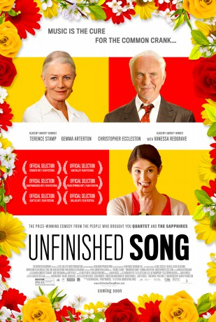
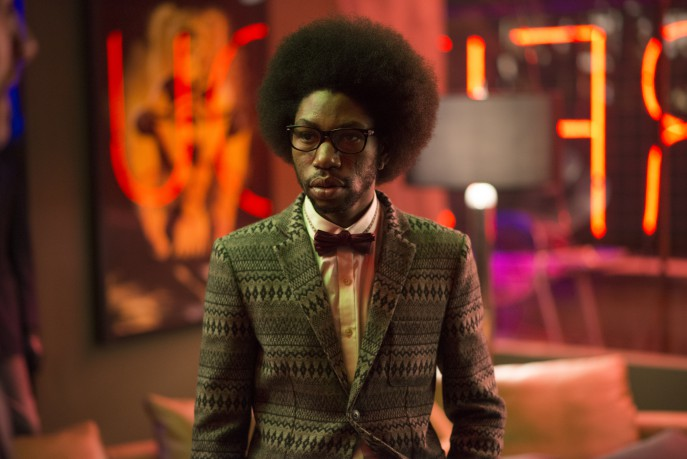

#1941 Song für Marion
Alternativ: Unfinished Song (Englischer Titel)
 
 IMDB-Wertung: 7.0 / 10
IMDB-Wertung: 7.0 / 10  Metascore: 57
Metascore: 57 
"Song for Marion", a London-set comedic drama, is about shy, grumpy pensioner Arthur who is reluctantly inspired by his beloved wife Marion to join a highly unconventional local choir. At odds with his son James, it is left to charismatic choir director Elizabeth to try and persuade Arthur that he can learn to embrace life. Arthur must confront the undercurrents of his own grumbling persona as he embarks on a hilarious, life-affirming journey of musical self discovery.
Jahr: 2012
Dauer: 93 Minuten
FSK: 0
Land: England Studio: Ascot Elite Entertainment GroupTonspuren: DTS - ,
Untertitel: Deutsch,
Auflösung: 1080p (1920x808) Größe: 8140 MB
Genre: Drama, Musik, Komödie, Liebe
Regisseur: Paul Andrew Williams
Drehbuch: Paul Andrew Williams
Soundtrack: Laura Rossi
Darsteller:
 Terence Stamp als Arthur
Terence Stamp als Arthur Vanessa Redgrave als Marion
Vanessa Redgrave als Marion Gemma Arterton als Elizabeth
Gemma Arterton als Elizabeth Anne Reid als Brenda
Anne Reid als Brenda Christopher Eccleston als James
Christopher Eccleston als James- Orla Hill als Jennifer
- Calita Rainford als Doctor
- Calum Sivyer als Heavy Metal Kid
- Sophie Boyd als Woman in Park , uncredited
- Helen Coverdale als Spectator , uncredited
- Emily Wood als Audience Member , uncredited
- Barry Martin als Timothy
- Taru Devani als Sujantha
 Elizabeth Counsell als Cheryl
Elizabeth Counsell als Cheryl- Ram John Holder als Charlie
- Denise Rubens als Marge
- Arthur Nightingale als Terry
-  Jumayn Hunter als Steven
- Bill Thomas als Bill
- Willie Jonah als Robert
- Federay Holmes als Day Care Nurse
- Alan Ruscoe als Judge
- Sally Ann Matthews als Playground Monitor
- Paul Andrew Williams als Delivery Guy
- Caroline Bartleet als Runner
- Brian Shelley als Choir Organiser
- Christopher Terry als Male Compere
- Melanie Cripps als Female Compere
- Dominic Kemp als Doctor
- Joy Alexander als The OAP'Z
- Judith Baird als The OAP'Z
- Bob Buyers als The OAP'Z
- Sally-anne Cooper als The OAP'Z
- Joan Fagon als The OAP'Z
- Lynn Fox als The OAP'Z
- Anthony Friswell als The OAP'Z
- Christine Glazzard als The OAP'Z
- Christopher Gulliver als The OAP'Z
- Joe Hewison als The OAP'Z
- Pat Mailer als The OAP'Z
- Janet Meikle als The OAP'Z
- June Mitchell als The OAP'Z
- Marie Mossison als The OAP'Z
- Jenny Hales Owen als The OAP'Z
- Sid Robertson als The OAP'Z
- Ian Scott als The OAP'Z
- Joan Smith als The OAP'Z
 Mike Smith als The OAP'Z
Mike Smith als The OAP'Z- Sue Sweeney als The OAP'Z
- Margaret Taroni als The OAP'Z
Datei: X:\2012(N-Z)\Song für Marion (2012, FSKo.Al., 1920x808).mkv seit 05.09.2015
Festplatte: HD 2012(N-Z)-2013(A-H)
 Es gibt insgesamt 138 Filme in der Gruppe '2012(N-Z)'
Es gibt insgesamt 138 Filme in der Gruppe '2012(N-Z)'